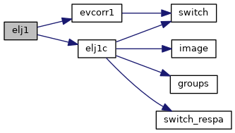
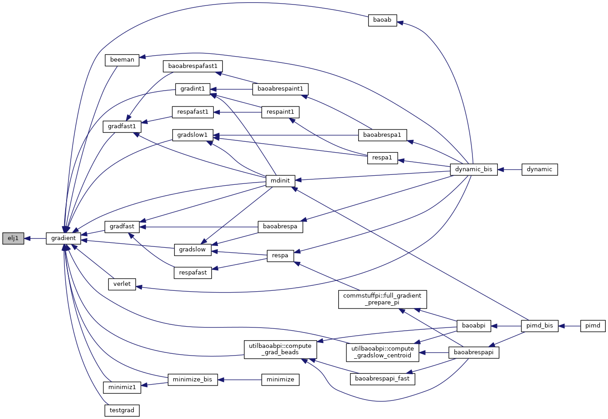
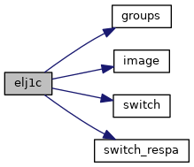
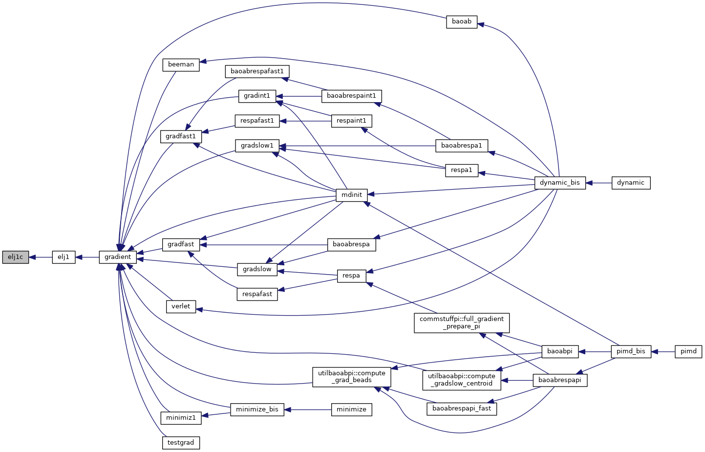

|
Tinker-HP v1.3
|
|
Tinker-HP v1.3
|
Go to the source code of this file.
Functions/Subroutines | |
| subroutine | elj1 |
| calculates the Lennard-Jones 6-12 van der Waals energy and its first derivatives with respect to Cartesian coordinates More... | |
| subroutine | elj1c |
| calculates the Lennard Jones 12-6 van der Waals energy and its first derivatives using a pairwise neighbor list More... | |
| subroutine elj1 | ( | ) |
calculates the Lennard-Jones 6-12 van der Waals energy and its first derivatives with respect to Cartesian coordinates
| no | params |
Definition at line 21 of file elj1.f90.
References elj1c(), and evcorr1().
Referenced by gradient().


| subroutine elj1c | ( | ) |
calculates the Lennard Jones 12-6 van der Waals energy and its first derivatives using a pairwise neighbor list
| no | params |
Definition at line 70 of file elj1.f90.
References groups(), image(), switch(), and switch_respa().
Referenced by elj1().


 1.8.5
1.8.5